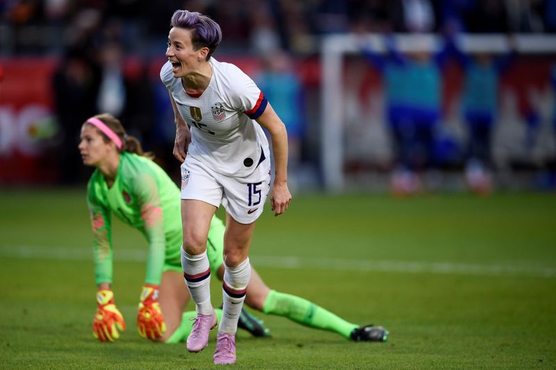

‘We have filled stadiums’: U.S. soccer star Rapinoe renews call for gender pay equity
(Reuters) – U.S. women’s national soccer team star Megan Rapinoe renewed her call for gender pay equity on Wednesday, appearing before a congressional panel and pledging to 'carry this torch' alongside her teammates.
Rapinoe said the World Cup winners received inadequate compensation for exceeding the accomplishments of their male counterparts.Two years earlier, she and her teammates filed a landmark gender discrimination lawsuit against U.S. Soccer.
'There is no level of status, accomplishments, or power that will protect you from the clutches of inequity,' Rapinoe said in written testimony to the House of Representatives Committee on Oversight and Reform.
'We have filled stadiums, broken viewing records, and sold out jerseys, all popular metrics by which we are judged.'
U.S. Soccer said it applauded Rapinoe’s position as a 'champion for equal pay.'In 2019, it argued that the women’s team had received more compensation than the men’s over the last decade.
'My hope is the players will accept our standing invitation to meet and find a path forward that serves the women’s team now and in the future,' U.S. Soccer President Cindy Parlow Cone said in a written statement.'We, too, are committed to equal pay.'
U.S. women’s national team players sued their governing body in 2019, alleging gender discrimination in wages and playing conditions.As the team claimed its fourth World Cup title in France that summer, fans backed their complaint, chanting 'equal pay' during the World Cup final match.
In May 2020, a United States District Court judge for the Central District of California threw out players’ claims for equal pay.The players and U.S. Soccer reached a settlement in December over working conditions.
A hearing over that settlement is set for April 12 and players will be free to appeal their wage claims if it is approved.
'We put in just as much work, we train just as hard.We compete to bring trophies back to the United States,' said Rapinoe.
The women’s team members are set to compete in the Tokyo Games, where they will vie for their fifth Olympic gold.
Rapinoe won the Golden Boot and Golden Ball at the 2019 World Cup, en route to claiming the Ballon d’Or and Sports Illustrated Sportsperson of the Year honors.It was a defining year in which she harnessed her celebrity to tackle political issues.
Rapinoe and her teammate Margaret Purce later went to the White House to mark Equal Pay Day with President Joe Biden, and their teammates who attended virtually.
'I’ve been devalued, I’ve been disrespected and dismissed because I am a woman,' Rapinoe said at the White House.'I’ve been told I don’t deserve any more than less… Despite all the wins, I’m still paid less than men who do the same job that I do.'
(Reporting by Amy Tennery; Editing by Nick Zieminski and David Gregorio)
Posted On: 2021-03-26T00:00:00
Posted By: Amy Tennery

Content Date: 2021-03-26
Download Date: 2021-04-16
Document ID: L0C04A333